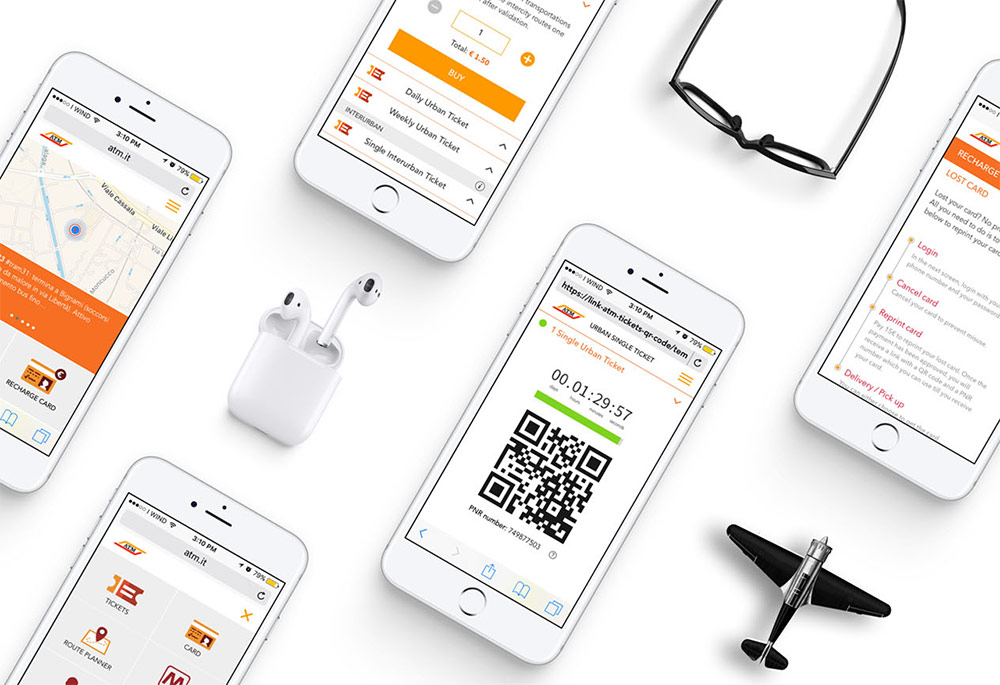

Ciao! I am Ramya Venkatachalam, a web designer currently working in Milan. With roots in visual design, I balance usability with typography and layout.
Say hi: ramyav300@gmail.com
UX Design blahblah

Azienda Trasporti Milanesi
App, Digital kiosk